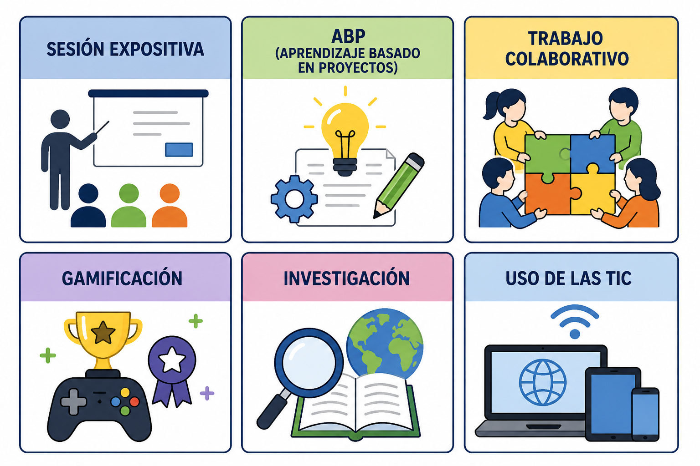
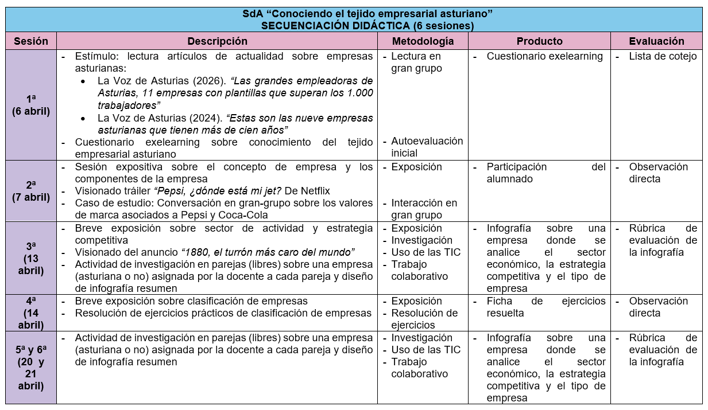
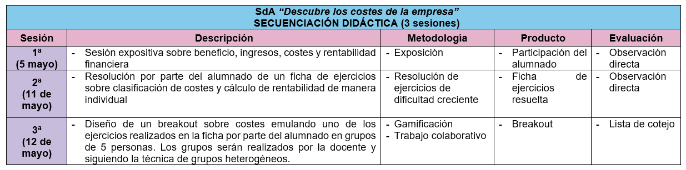

Metodologías activas
La metodología empleada en esta Unidad combinará diferentes estrategias activas y participativas con el objetivo de favorecer un aprendizaje práctico, motivador y conectado con la realidad del alumnado. De este modo, los estudiantes no solo adquirirán conocimientos teóricos sobre la empresa, sino que también aprenderán a aplicarlos en situaciones reales y cercanas a su entorno.
Las sesiones expositivas se utilizarán para introducir y explicar los conceptos fundamentales de la unidad, como el concepto de empresa, sus elementos, los costes, la rentabilidad o las áreas funcionales. Estas explicaciones se apoyarán en ejemplos reales, especialmente de empresas asturianas, fomentando la participación del alumnado mediante preguntas y pequeños debates.
El aprendizaje basado en proyectos (ABP) estará presente a través del desarrollo del plan de negocio que el alumnado elaborará a lo largo del Trimestre. Este proyecto permitirá aplicar de manera integrada los contenidos trabajados, favoreciendo la creatividad, la iniciativa emprendedora y la toma de decisiones.
El trabajo colaborativo tendrá un papel importante en la realización de actividades grupales, como la elaboración de la infografía sobre una empresa asturiana o determinadas dinámicas de análisis empresarial. A través de estas tareas, el alumnado desarrollará habilidades sociales como la comunicación, la cooperación y el reparto de responsabilidades.
La gamificación se incorporará mediante un escape room educativo centrado en la estructura de costes de una empresa. Esta actividad permitirá reforzar contenidos económicos de forma motivadora, fomentando la resolución de problemas y el aprendizaje activo.
La investigación será fundamental para que el alumnado conozca el tejido empresarial asturiano. Los estudiantes deberán buscar, seleccionar y analizar información sobre empresas reales, desarrollando así su capacidad crítica y su autonomía en el aprendizaje.
Por último, el uso de las TIC estará presente durante toda la Unidad mediante herramientas digitales para la búsqueda de información, la elaboración de infografías, presentaciones y actividades interactivas. Estas tecnologías facilitarán un aprendizaje más visual, dinámico y adaptado a las competencias digitales que el alumnado necesita desarrollar en la actualidad.

SdA "Conoce el tejido empresarial asturiano"

Enlaces a recursos:
📰 La Voz de Asturias (2026). “Las grandes empleadoras de Asturias, 11 empresas con plantillas que superan los 1.000 trabajadores”
📰 La Voz de Asturias (2024). “Estas son las nueve empresas asturianas que tienen más de cien años”
▶️ Trailer “Pepsi, ¿dónde está mi jet?" . Netflix
▶️ Anuncio “1880, el turrón más caro del mundo”
SdA "Descubre los costes de la empresa"
